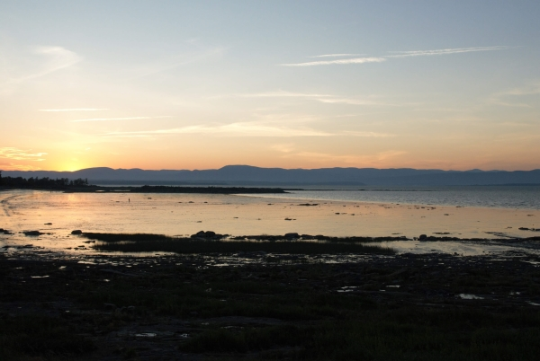
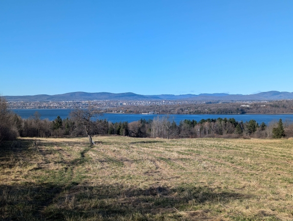
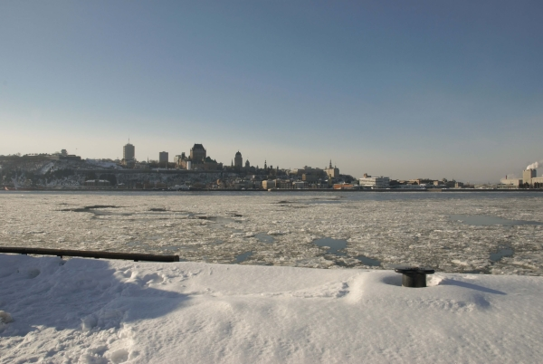

Les Balades du St-Laurent
À propos
Suggérer un lieu
English
Plage de Berthier-Sur-Mer
Berthier-Sur-Mer

©
Mégan Gagné Photographe
Parc de la Pointe de la Martinière
Lévis

©
Mégan Gagné Photographe
Quai Paquet
Lévis

©
Mégan Gagné Photographe